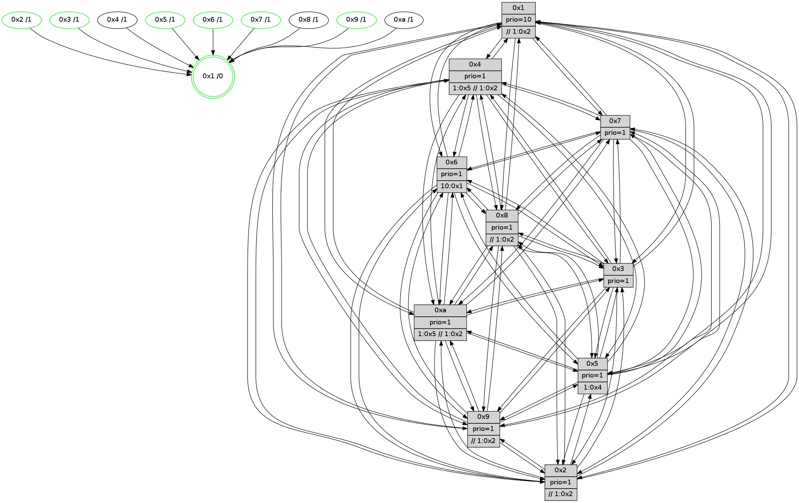

>> << IDX [start] -100 -25 -5 +0 +5 +25 +100 [710.534605026]
 Previous packets
----------------------------------------------------------------------
705.017687 beacon01(faad) #0 coord=01,02,03,04,05,06,07,0a,09,08 cycle=688.0ms assoc
-- color-indic=1 64 e8 28
705.027670 beacon02(faad) #0 coord=01,02,03,04,05,06,07,0a,09,08 cycle=688.0ms assoc 64 7b 19
705.037669 beacon03(faad) #0 coord=01,02,03,04,05,06,07,0a,09,08 cycle=688.0ms assoc 64 01 54
705.047670 beacon04(faad) #0 coord=01,02,03,04,05,06,07,0a,09,08 cycle=688.0ms assoc 64 76 be
705.057669 beacon05(faad) #0 coord=01,02,03,04,05,06,07,0a,09,08 cycle=688.0ms assoc 64 0c f3
705.067669 beacon06(faad) #0 coord=01,02,03,04,05,06,07,0a,09,08 cycle=688.0ms assoc 64 82 24
705.077671 beacon07(faad) #0 coord=01,02,03,04,05,06,07,0a,09,08 cycle=688.0ms assoc 64 f8 69
705.087675 beacon0a(faad) #0 coord=01,02,03,04,05,06,07,0a,09,08 cycle=688.0ms assoc 64 89 62
705.097676 beacon09(faad) #0 coord=01,02,03,04,05,06,07,0a,09,08 cycle=688.0ms assoc 64 07 b5
705.107675 beacon08(faad) #0 coord=01,02,03,04,05,06,07,0a,09,08 cycle=688.0ms assoc 64 7d f8
705.118895 [Hello(7): seq=452 sym=2,3,5,6,4,8,9,10,1 sysInfo=hasWarning stat=2:12,5,12,9/3:12,14,8,9/5:10,8,7,11/6:2,9,6,2/4:8,9,2,0/8:1,5,10,4/9:0,1,9,8/10:6,5,11,7/1:5,5,6,1]
705.123522 [Hello(3): seq=452 sym=1,7,6,2,4,8,9,10,5 sysInfo= stat=1:4,12,7,1/7:6,3,3,2/6:9,9,15,7/2:12,2,4,8/4:3,0,3,4/8:3,4,3,2/9:8,11,9,6/10:13,8,6,5/5:4,1,4,7]
705.131257 [Hello(6): seq=452 sym=2,3,5,4,7,9,8,10,1 asym= sysInfo= stat=2:5,8,14,7/3:14,14,6,7/5:15,7,5,9/4:15,4,5,0/7:6,4,3,1/9:2,8,7,6/8:13,15,7,5/10:5,7,13,6/1:12,12,2,1]
705.135572 [Hello(4): seq=452 sym=5,7,6,2,3,9,8,10,1 asym= sysInfo= stat=5:0,8,3,7/7:8,2,6,2/6:0,5,7,7/2:6,10,2,7/3:8,5,14,5/9:14,1,2,3/8:5,11,5,7/10:12,9,7,6/1:11,4,6,1]
705.141389 PARSE ERROR************************
Traceback (most recent call last):
File "PacketAnalysis.py", line 167, in showOperaPacket
structPacket = OperaPacketParse.parsePacket(rawPacket)
File "../../pkg-python/HipSens/Core/OperaPacketParse.py", line 461, in parsePacket
return parseHelloMessage(data)
File "../../pkg-python/HipSens/Core/OperaPacketParse.py", line 125, in parseHelloMessage
struct.unpack("!H",linkList[:2])[0])
error: unpack requires a string argument of length 2
48 34 01 00 01 69 00 02 02 12 04 00 02 00 09 00 05 00 0a 00 03 00 08 00 06 00 07 00 53 04 00 84 00 00 4c 12 04 13 8c 8f 05 e3 04 6e 7b f6 b2 c2 6f f5 6c a2 82 02 4d 67
----------------------------------------------------------------------
705.805818 beacon01(faad) #0 coord=01,02,03,04,05,06,07,0a,09,08 cycle=688.0ms assoc
-- color-indic=1 64 54 2d
705.815800 beacon02(faad) #0 coord=01,02,03,04,05,06,07,0a,09,08 cycle=688.0ms assoc 64 c7 1c
705.825800 beacon03(faad) #0 coord=01,02,03,04,05,06,07,0a,09,08 cycle=688.0ms assoc 64 bd 51
705.835802 beacon04(faad) #0 coord=01,02,03,04,05,06,07,0a,09,08 cycle=688.0ms assoc 64 ca bb
705.845801 beacon05(faad) #0 coord=01,02,03,04,05,06,07,0a,09,08 cycle=688.0ms assoc 64 b0 f6
705.855803 beacon06(faad) #0 coord=01,02,03,04,05,06,07,0a,09,08 cycle=688.0ms assoc 64 3e 21
705.865802 beacon07(faad) #0 coord=01,02,03,04,05,06,07,0a,09,08 cycle=688.0ms assoc 64 44 6c
705.875807 beacon0a(faad) #0 coord=01,02,03,04,05,06,07,0a,09,08 cycle=688.0ms assoc 64 35 67
705.885806 beacon09(faad) #0 coord=01,02,03,04,05,06,07,0a,09,08 cycle=688.0ms assoc 64 bb b0
705.895807 beacon08(faad) #0 coord=01,02,03,04,05,06,07,0a,09,08 cycle=688.0ms assoc 64 c1 fd
705.906989 [Hello(10): seq=385 sym=6,2,3,8,9,5,7,4,1 sysInfo=hasWarning stat=6:5,2,7,2/2:1,11,13,1/3:9,1,13,5/8:9,4,3,6/9:4,11,0,4/5:2,2,1,8/7:1,14,4,3/4:0,3,12,6/1:1,15,8,1]
705.909719 [Color(3) seq=104 @0:0 prio=1]
705.911654 [Color(7) seq=94 @0:0 prio=1]
705.914824 [Hello(5): seq=453 sym=7,6,4,3,1,9,8,10,2 sysInfo=hasWarning stat=7:0,0,8,4/6:0,0,6,6/4:11,10,15,5/3:4,5,0,6/1:1,0,5,1/9:1,2,0,0/8:3,6,15,4/10:11,11,5,5/2:6,13,2,0]
705.918297 [Color(1) seq=133 @0:0 prio=10 >>1.@2,1.@3,1.@4]
705.920369 [Hello(8): seq=396 sym=5,2,3,4,7,6,9,10,1 sysInfo=hasWarning stat=5:12,5,6,7/2:5,10,14,2/3:0,3,3,9/4:7,2,5,6/7:15,15,6,6/6:10,4,2,7/9:4,11,7,5/10:6,12,6,6/1:4,0,6,0]
705.923952 [Hello(2): seq=449 sym=4,5,7,6,3,9,8,10,1 sysInfo=hasWarning stat=4:6,13,2,4/5:0,1,1,0/7:8,11,9,4/6:11,3,5,5/3:12,8,1,3/9:10,11,15,1/8:9,11,14,4/10:14,1,1,4/1:15,13,1,1]
705.927098 [Color(2) seq=98 @0:0 prio=1 >1.@5 >>1.@2,1.@3,1.@4]
705.929431 [Color(5) seq=106 @0:0 prio=1 >1.@4,1.@6,1.@7,1.@8]
----------------------------------------------------------------------
706.593949 beacon01(faad) #0 coord=01,02,03,04,05,06,07,0a,09,08 cycle=688.0ms assoc
-- color-indic=1 64 90 23
706.603931 beacon02(faad) #0 coord=01,02,03,04,05,06,07,0a,09,08 cycle=688.0ms assoc 64 03 12
706.613932 beacon03(faad) #0 coord=01,02,03,04,05,06,07,0a,09,08 cycle=688.0ms assoc 64 79 5f
706.623932 beacon04(faad) #0 coord=01,02,03,04,05,06,07,0a,09,08 cycle=688.0ms assoc 64 0e b5
706.633933 beacon05(faad) #0 coord=01,02,03,04,05,06,07,0a,09,08 cycle=688.0ms assoc 64 74 f8
706.643931 beacon06(faad) #0 coord=01,02,03,04,05,06,07,0a,09,08 cycle=688.0ms assoc 64 fa 2f
706.653932 beacon07(faad) #0 coord=01,02,03,04,05,06,07,0a,09,08 cycle=688.0ms assoc 64 80 62
706.663938 beacon0a(faad) #0 coord=01,02,03,04,05,06,07,0a,09,08 cycle=688.0ms assoc 64 f1 69
706.673937 beacon09(faad) #0 coord=01,02,03,04,05,06,07,0a,09,08 cycle=688.0ms assoc 64 7f be
706.683938 beacon08(faad) #0 coord=01,02,03,04,05,06,07,0a,09,08 cycle=688.0ms assoc 64 05 f3
706.695411 [Hello(6): seq=453 sym=2,3,5,4,7,9,8,10,1 sysInfo= stat=2:6,9,14,7/3:14,15,6,7/5:0,8,5,9/4:0,4,5,0/7:6,5,3,1/9:2,8,7,6/8:14,15,7,5/10:6,7,13,6/1:13,13,2,1]
706.700411 [Hello(7): seq=453 sym=2,3,5,6,4,8,9,10,1 sysInfo=hasWarning stat=2:13,6,12,9/3:13,14,8,9/5:11,9,7,11/6:3,9,6,2/4:9,9,2,0/8:2,5,10,4/9:0,1,9,8/10:7,5,11,7/1:6,6,6,1]
706.703856 [STC(1) #0.64 tree-change,inconsistent-stability,stable,to-color d=0]
706.707645 [Hello(4): seq=453 sym=5,7,6,2,3,9,8,10,1 sysInfo= stat=5:0,9,3,7/7:8,2,6,2/6:0,5,7,7/2:7,11,2,7/3:8,6,14,5/9:15,2,2,3/8:6,11,5,7/10:13,9,7,6/1:12,5,6,1]
706.718418 [Hello(3): seq=453 sym=1,7,6,2,4,8,9,10,5 sysInfo= stat=1:5,13,7,1/7:6,4,3,2/6:10,9,15,7/2:13,3,4,8/4:4,0,3,4/8:4,4,3,2/9:8,11,9,6/10:14,8,6,5/5:5,2,4,7]
----------------------------------------------------------------------
707.382078 beacon01(faad) #0 coord=01,02,03,04,05,06,07,0a,09,08 cycle=688.0ms assoc
-- color-indic=1 64 2c 26
707.392062 beacon02(faad) #0 coord=01,02,03,04,05,06,07,0a,09,08 cycle=688.0ms assoc 64 bf 17
707.402061 beacon03(faad) #0 coord=01,02,03,04,05,06,07,0a,09,08 cycle=688.0ms assoc 64 c5 5a
707.412061 beacon04(faad) #0 coord=01,02,03,04,05,06,07,0a,09,08 cycle=688.0ms assoc 64 b2 b0
707.422061 beacon05(faad) #0 coord=01,02,03,04,05,06,07,0a,09,08 cycle=688.0ms assoc 64 c8 fd
707.432062 beacon06(faad) #0 coord=01,02,03,04,05,06,07,0a,09,08 cycle=688.0ms assoc 64 46 2a
707.442063 beacon07(faad) #0 coord=01,02,03,04,05,06,07,0a,09,08 cycle=688.0ms assoc 64 3c 67
707.452066 beacon0a(faad) #0 coord=01,02,03,04,05,06,07,0a,09,08 cycle=688.0ms assoc 64 4d 6c
707.462066 beacon09(faad) #0 coord=01,02,03,04,05,06,07,0a,09,08 cycle=688.0ms assoc 64 c3 bb
707.472067 beacon08(faad) #0 coord=01,02,03,04,05,06,07,0a,09,08 cycle=688.0ms assoc 64 b9 f6
707.483456 [Hello(10): seq=386 sym=6,2,3,8,9,5,7,4,1 sysInfo=hasWarning stat=6:6,2,7,2/2:2,12,13,1/3:10,2,13,5/8:10,4,3,6/9:4,11,0,4/5:3,3,1,8/7:2,15,4,3/4:1,3,12,6/1:1,0,9,1]
707.486189 [Color(3) seq=105 @0:0 prio=1]
707.487641 [Hello(2): seq=450 sym=4,5,7,6,3,9,8,10,1 sysInfo=hasWarning stat=4:7,13,2,4/5:0,2,1,0/7:9,11,9,4/6:12,3,5,5/3:13,9,1,3/9:10,11,15,1/8:9,11,14,4/10:15,1,1,4/1:15,13,2,1]
707.490105 [Hello(8): seq=397 sym=5,2,3,4,7,6,9,10,1 sysInfo=hasWarning stat=5:12,6,6,7/2:6,11,14,2/3:1,3,3,9/4:8,2,5,6/7:15,15,6,6/6:11,4,2,7/9:4,11,7,5/10:6,12,6,6/1:4,0,7,0]
707.492940 [STC(8)->1 #0.64 tree-change,inconsistent-stability,to-color d=1]
707.495985 [STC(10)->1 #0.64 tree-change,inconsistent-stability,to-color d=1]
707.497247 [STC(2)->1 #0.64 tree-change,inconsistent-stability,stable,to-color d=1]
707.498736 [Color(1) seq=134 @0:0 prio=10 >>1.@2,1.@3,1.@5]
707.501008 [STC(7)->1 #0.64 tree-change,inconsistent-stability,stable,to-color d=1]
707.503906 [Color(7) seq=95 @0:0 prio=1]
707.505854 [Hello(9): seq=397 sym=5,2,3,4,7,6,8,10,1 sysInfo=hasWarning stat=5:2,9,0,8/2:6,3,9,5/3:12,9,1,8/4:15,5,1,5/7:3,7,9,4/6:14,11,3,5/8:7,11,10,2/10:6,6,7,7/1:14,14,9,1]
707.508763 [Color(2) seq=99 @0:0 prio=1 >>1.@2,1.@3,1.@5]
707.510598 [STC(9)->1 #0.64 tree-change,inconsistent-stability,stable,to-color d=1]
707.512247 [Color(9) seq=102 @0:0 prio=1 >>1.@2,1.@3,1.@5]
707.514732 [Hello(5): seq=454 sym=7,6,4,3,1,9,8,10,2 sysInfo=hasWarning stat=7:1,0,8,4/6:1,0,6,6/4:12,10,15,5/3:5,6,0,6/1:1,0,6,1/9:1,2,0,0/8:3,6,15,4/10:12,11,5,5/2:6,13,2,0]
707.519132 [STC(5)->1 #0.64 tree-change,inconsistent-stability,stable,to-color d=1]
707.521402 [Color(5) seq=107 @0:0 prio=1 >1.@4,1.@6,1.@7,1.@9]
707.528019 [STC(6)->1 #0.64 tree-change,inconsistent-stability,stable,to-color d=1]
707.531882 [TreeStatus(6)-.->1 #0.64 tree-change,inconsistent-stability,stable child=1]
----------------------------------------------------------------------
708.170209 beacon01(faad) #0 coord=01,02,03,04,05,06,07,0a,09,08 cycle=688.0ms assoc
-- color-indic=1 64 18 3e
708.180191 beacon02(faad) #0 coord=01,02,03,04,05,06,07,0a,09,08 cycle=688.0ms assoc 64 8b 0f
708.190192 beacon03(faad) #0 coord=01,02,03,04,05,06,07,0a,09,08 cycle=688.0ms assoc 64 f1 42
708.200193 beacon04(faad) #0 coord=01,02,03,04,05,06,07,0a,09,08 cycle=688.0ms assoc 64 86 a8
708.210191 beacon05(faad) #0 coord=01,02,03,04,05,06,07,0a,09,08 cycle=688.0ms assoc 64 fc e5
708.220191 beacon06(faad) #0 coord=01,02,03,04,05,06,07,0a,09,08 cycle=688.0ms assoc 64 72 32
708.230194 beacon07(faad) #0 coord=01,02,03,04,05,06,07,0a,09,08 cycle=688.0ms assoc 64 08 7f
708.240199 beacon0a(faad) #0 coord=01,02,03,04,05,06,07,0a,09,08 cycle=688.0ms assoc 64 79 74
708.250197 beacon09(faad) #0 coord=01,02,03,04,05,06,07,0a,09,08 cycle=688.0ms assoc 64 f7 a3
708.260198 beacon08(faad) #0 coord=01,02,03,04,05,06,07,0a,09,08 cycle=688.0ms assoc 64 8d ee
708.271727 [Hello(7): seq=454 sym=2,3,5,6,4,8,9,10,1 sysInfo=hasWarning stat=2:13,7,12,9/3:14,14,8,9/5:12,10,8,11/6:3,9,7,3/4:10,9,2,0/8:2,5,10,4/9:1,2,10,8/10:8,5,11,7/1:6,6,7,1]
708.275019 [Hello(4): seq=454 sym=5,7,6,2,3,9,8,10,1 sysInfo= stat=5:1,10,4,7/7:8,3,7,2/6:0,5,8,8/2:8,12,3,7/3:9,7,14,5/9:0,3,3,3/8:7,11,6,7/10:14,9,8,6/1:12,6,6,1]
708.278268 [Hello(1): seq=363 sym=4,2,9,5,10,3,8,6,7 sysInfo=coloring-mode-on,ColoringModeRequestCalled stat=4:4,1,4,0/2:0,10,12,8/9:4,15,6,0/5:15,8,5,0/10:8,15,11,7/3:3,12,2,11/8:6,15,15,6/6:2,10,13,7/7:2,1,3,8]
708.285056 [Hello(6): seq=454 sym=2,3,5,4,7,9,8,10,1 sysInfo= stat=2:6,9,14,7/3:15,15,6,7/5:0,8,5,9/4:1,4,5,0/7:7,5,3,1/9:2,8,7,6/8:14,15,7,5/10:6,7,13,6/1:13,13,3,1]
708.291030 [Hello(3): seq=454 sym=1,7,6,2,4,8,9,10,5 sysInfo= stat=1:5,14,7,1/7:6,5,4,2/6:10,9,0,8/2:14,4,5,8/4:4,0,3,4/8:5,4,4,2/9:9,12,10,6/10:15,8,7,5/5:6,3,5,7]
----------------------------------------------------------------------
708.958340 beacon01(faad) #0 coord=01,02,03,04,05,06,07,0a,09,08 cycle=688.0ms assoc
-- color-indic=1 64 a4 3b
708.968323 beacon02(faad) #0 coord=01,02,03,04,05,06,07,0a,09,08 cycle=688.0ms assoc 64 37 0a
708.978324 beacon03(faad) #0 coord=01,02,03,04,05,06,07,0a,09,08 cycle=688.0ms assoc 64 4d 47
708.988323 beacon04(faad) #0 coord=01,02,03,04,05,06,07,0a,09,08 cycle=688.0ms assoc 64 3a ad
708.998323 beacon05(faad) #0 coord=01,02,03,04,05,06,07,0a,09,08 cycle=688.0ms assoc 64 40 e0
709.008325 beacon06(faad) #0 coord=01,02,03,04,05,06,07,0a,09,08 cycle=688.0ms assoc 64 ce 37
709.018324 beacon07(faad) #0 coord=01,02,03,04,05,06,07,0a,09,08 cycle=688.0ms assoc 64 b4 7a
709.028329 beacon0a(faad) #0 coord=01,02,03,04,05,06,07,0a,09,08 cycle=688.0ms assoc 64 c5 71
709.038327 beacon09(faad) #0 coord=01,02,03,04,05,06,07,0a,09,08 cycle=688.0ms assoc 64 4b a6
709.048328 beacon08(faad) #0 coord=01,02,03,04,05,06,07,0a,09,08 cycle=688.0ms assoc 64 31 eb
709.061727 [Hello(10): seq=387 sym=6,2,3,8,9,5,7,4,1 sysInfo=hasWarning stat=6:7,2,8,3/2:2,13,14,1/3:11,2,13,5/8:10,4,3,6/9:5,12,1,4/5:4,4,2,8/7:3,0,5,3/4:2,3,12,6/1:2,1,9,1]
709.064427 [Hello(9): seq=398 sym=5,2,3,4,7,6,8,10,1 sysInfo=hasWarning stat=5:3,10,1,8/2:6,3,9,5/3:13,10,1,8/4:0,5,1,5/7:4,7,9,4/6:15,11,4,6/8:7,11,10,2/10:7,6,7,7/1:15,14,9,1]
709.067149 [Color(7) seq=96 @0:0 prio=1]
709.070285 [Hello(2): seq=451 sym=4,5,7,6,3,9,8,10,1 sysInfo=hasWarning stat=4:8,13,2,4/5:1,3,2,0/7:10,11,9,4/6:13,3,6,6/3:14,10,1,3/9:10,12,0,1/8:10,11,14,4/10:0,1,1,4/1:0,13,2,1]
709.072818 [Color(3) seq=106 @0:0 prio=1]
709.074071 [Color(5) seq=108 @0:0 prio=1 >1.@4,1.@6,1.@7,1.@9]
709.076605 [Color(9) seq=103 @0:0 prio=1 >>1.@2,1.@3,1.@5]
709.079941 [Color(2) seq=100 @0:0 prio=1 >>1.@2,1.@3,1.@5]
709.083090 [Color(1) seq=135 @0:0 prio=10 >>1.@2,1.@3,1.@5]
----------------------------------------------------------------------
709.746473 beacon01(faad) #0 coord=01,02,03,04,05,06,07,0a,09,08 cycle=688.0ms assoc
-- color-indic=1 64 60 35
709.756456 beacon02(faad) #0 coord=01,02,03,04,05,06,07,0a,09,08 cycle=688.0ms assoc 64 f3 04
709.766455 beacon03(faad) #0 coord=01,02,03,04,05,06,07,0a,09,08 cycle=688.0ms assoc 64 89 49
709.776456 beacon04(faad) #0 coord=01,02,03,04,05,06,07,0a,09,08 cycle=688.0ms assoc 64 fe a3
709.786456 beacon05(faad) #0 coord=01,02,03,04,05,06,07,0a,09,08 cycle=688.0ms assoc 64 84 ee
709.796456 beacon06(faad) #0 coord=01,02,03,04,05,06,07,0a,09,08 cycle=688.0ms assoc 64 0a 39
709.806455 beacon07(faad) #0 coord=01,02,03,04,05,06,07,0a,09,08 cycle=688.0ms assoc 64 70 74
709.816460 beacon0a(faad) #0 coord=01,02,03,04,05,06,07,0a,09,08 cycle=688.0ms assoc 64 01 7f
709.826460 beacon09(faad) #0 coord=01,02,03,04,05,06,07,0a,09,08 cycle=688.0ms assoc 64 8f a8
709.836462 beacon08(faad) #0 coord=01,02,03,04,05,06,07,0a,09,08 cycle=688.0ms assoc 64 f5 e5
709.847993 [Hello(3): seq=455 sym=1,7,6,2,4,8,9,10,5 sysInfo= stat=1:5,15,7,1/7:6,5,4,2/6:10,9,0,8/2:14,5,5,8/4:4,0,3,4/8:5,4,4,2/9:9,13,10,6/10:15,8,7,5/5:6,4,5,7]
709.852047 [Hello(4): seq=455 sym=5,7,6,2,3,9,8,10,1 sysInfo= stat=5:2,11,4,7/7:8,3,7,2/6:1,5,8,8/2:9,13,3,7/3:10,8,14,5/9:1,4,3,3/8:7,11,6,7/10:15,9,8,6/1:13,7,6,1]
709.857231 [Hello(6): seq=455 sym=2,3,5,4,7,9,8,10,1 sysInfo= stat=2:7,10,14,7/3:0,0,6,7/5:0,9,5,9/4:1,4,5,0/7:7,6,3,1/9:3,9,7,6/8:15,15,7,5/10:6,7,13,6/1:13,14,3,1]
709.862391 [Hello(1): seq=364 sym=4,2,9,5,10,3,8,6,7 sysInfo=coloring-mode-on,ColoringModeRequestCalled stat=4:4,1,4,0/2:0,10,12,8/9:4,15,6,0/5:15,8,5,0/10:9,15,11,7/3:4,12,2,11/8:6,15,15,6/6:3,10,13,7/7:2,1,3,8]
709.867924 [Hello(7): seq=455 sym=2,3,5,6,4,8,9,10,1 sysInfo=hasWarning stat=2:14,8,12,9/3:15,15,8,9/5:12,11,8,11/6:4,9,7,3/4:11,9,2,0/8:2,5,10,4/9:1,3,10,8/10:9,5,11,7/1:7,7,7,1]